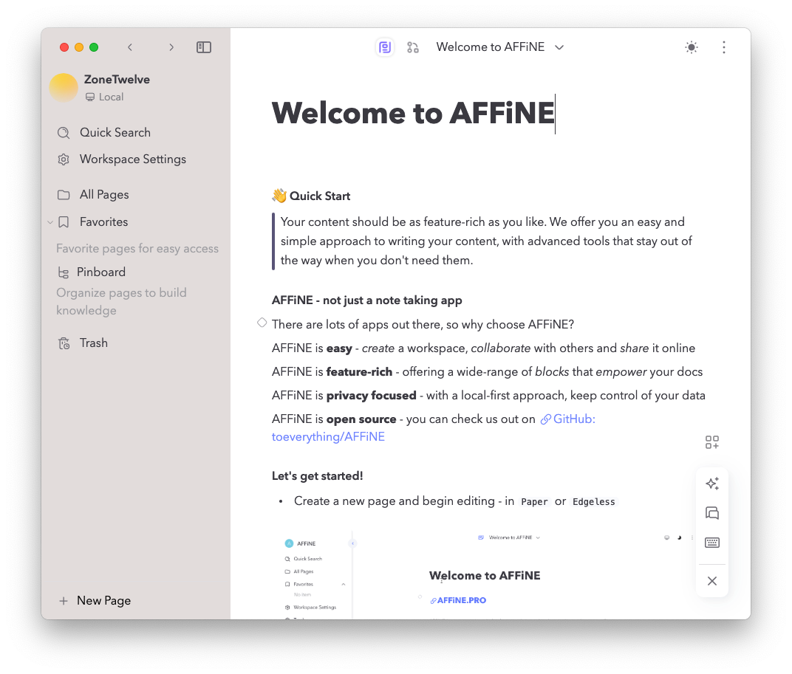
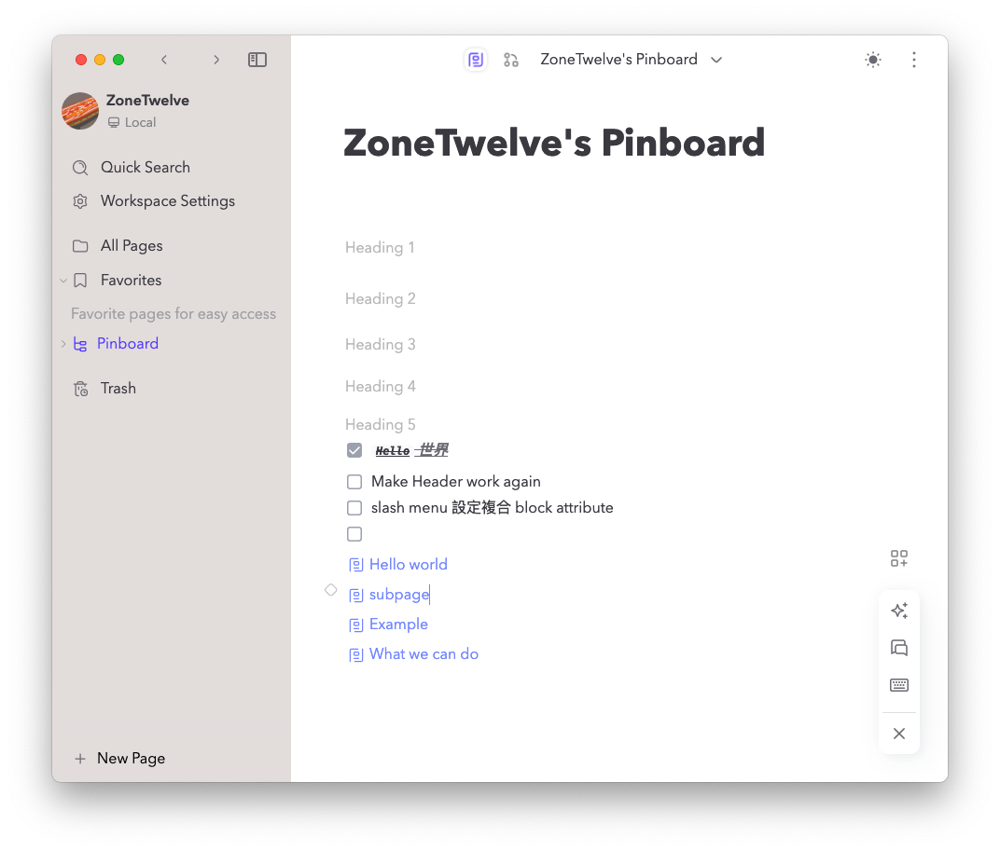
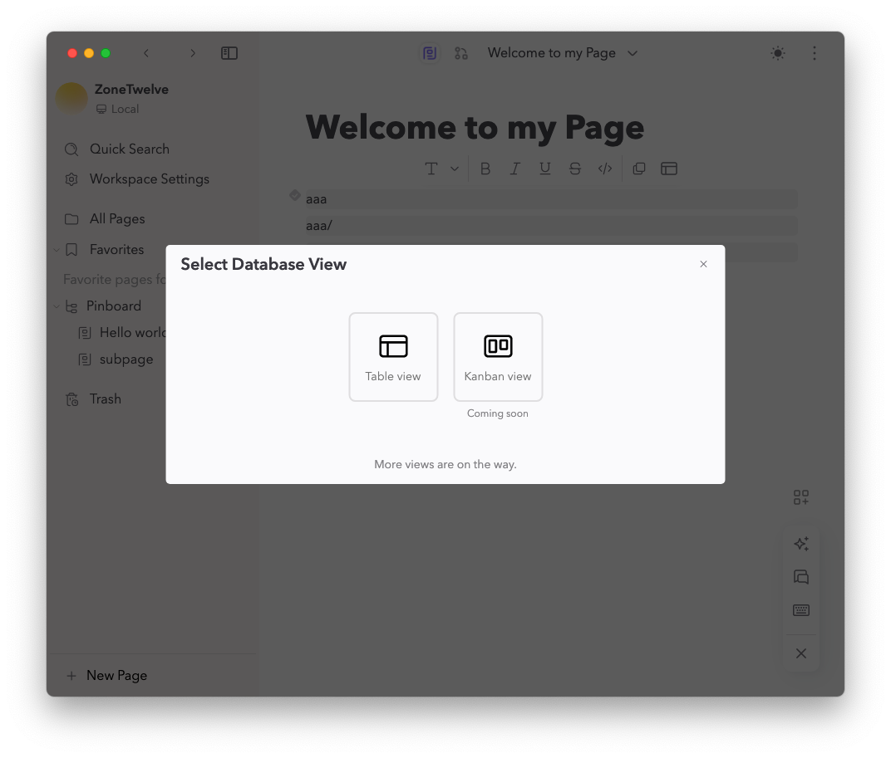

簡介
這是我追隨 AFFiNE Team 幾個月後的心得與分享。
這裡會用幾個大點帶給大家一個由淺至深的介紹 AFFiNE，為何 AFFiNE 會帶來關注等關鍵，除此之外，AFFiNE 雖然有堅強的實力，但實際的方向卻淺藏了一點危險的氣息。
我會大致上分成幾個大類，從原因、介紹、功能到經驗都做簡單的描述跟展示。
- 簡介 [目前位置]
- 原因
- 介紹
- 功能
- 經驗
- 評論
- 結語
我是非常看好 AFFiNE 的技術實力以及管理方法，每當團隊有一個核心要素過度強烈，就越要往團隊的視野盲區看，想知道更多的可以前往評論。
原因
基於我是 Notion 的重度使用者，並且熱衷於規劃、籌備、完善有系統的資訊系統，因此我需要一套能夠幫我快速且完整地整合資訊的軟體或服務。人可能會問我，既然已經使用 Notion 了，為什麼想轉換到其他軟體或服務呢？
我的回答是，我需要一個真正能夠自主管理且能夠保護隱私的服務。
對於個人化的服務或系統，一些人可能會覺得沒有關係。但是當涉及到資訊安全和資訊隱私問題時，能夠自己掌握資訊的機密性是最重要的。根據 ISO 27001 的要求，整體資訊安全需要滿足三大要素，包括機密性、可用性和完整性。
介紹
抱歉，談遠了。我現在想介紹一個開源知識共同編輯服務——AFFiNE。它目前支援 Web 和桌面應用兩種應用程式，並在自運社群中提供 self-hosing 技術支援。
作為一個旨在取代 Notion 的開源軟體，AFFiNE 的團隊真的是極為傑出。他們有一支技術精湛的成員，不僅研發了 AFFiNE 本身，還創建了編輯器框架 blocksuite 和最佳化資料庫服務 octobase。
在我看來，這樣一支高超的團隊有足夠的能力超越 Notion。雖然 AFFiNE 的日常使用與 Notion 還有一定的距離，但我會在接下來介紹 AFFiNE 支援的功能以及官方提供的介紹文檔，希望能讓大家更好地體驗它。
第一眼看到 AFFiNE 最印象深刻的部分就是很多基礎 block 看似成型，對於應付工作需求看似有模有樣。

功能分類
- 一眼入目
- 工作區 - Workspace (include settings, “Switch workspace”)
- 快速搜尋 - Quick Search
- 頁面管理 - Pages (include Favorites, Pinboard, Trash, “New Page”)
- 背景主題 - Editor theme (light and dark)
- 深入瞭解
- 白板模式 - Edgeless
- 編輯方塊 - Blocks
- 快速選單 - Slash menu
- 多國語言 - i18n
- 資料庫表 - Database View
工作區
- 優點
- 區分團隊或辦公環境
- 環境設定，加快找尋速度。
- 缺點
- 共同編輯功能不支援
- 只仰賴 AFFiNE Cloud
- 匯出只支援 SQLite 格式
- 共同編輯功能不支援
目前除了分不同辦公環境，暫時沒有合作方案，而且 AFFiNE Cloud 被關閉了。

頁面管理
Pages
中規中矩，沒有特出的地方，能夠建立每個文件的獨立頁面，
Pinboard
Pinboard 似乎想要支援建立 subpage 的範本，但是放置在左方選單有些過於顯眼，且讓人感到困惑。
此外，目前僅 Pinboard 支援 subpage 功能，一般的 block 還無法正常發揮功能。
- issues
- 意外觸發謎之移動，將一級 subpage 移動到隱藏的二級 subpage。
- Header 文字大小都是 paragraph + bold 的大小
- 滑鼠放在 block 控制的範圍內 <✓> 就無法滾動頁面

Buggy Pinboard
Trash
刪除前的保障，要說有其他功能嗎？也許可以加上一個定時清除。
New Page
當你想新增一個新頁面時，你可能會遇到卡住的情況，直到你發現了左下角的 New Page 按鈕。這是因為 Pinboard 支援使用 [+] 按鈕新增頁面。
快速搜尋
除了快速搜尋標題，似乎就沒有其他輔助功能，像內容搜尋等等
平常寫完，我也不會記得標題叫啥，運氣好一點，想起來關鍵字才勉強找到。
Notion 在 Link a page 也是有這個問題，所以只能仰賴好一點的命名規則。
背景主題
支援亮色與暗色主題，使用者可以透過上方的按鈕非常簡單快速地切換主題。然而，有些使用者可能希望能夠客製化自己的主題，或者使用主題市場的主題。
白板模式
Blocksuite 的功能之一
白板模式是一個非常先進的想法，它能夠一次性取代多種軟體的服務，加快團隊的討論速度。但是目前的功能仍未完善。如果團隊使用 Notion + Figma 作為討論橋樑，仍需要一段時間才能用 AFFiNE 取代它們。
- 優點
- 創新的討論方法
- 編輯工具完整 (目前缺少圖片)
- 缺點
- 控制相對不直觀，需使用快捷鍵或者 Hand 功能才能移動白板視界。
- 編輯工具的顏色只顯示黑色，即便支援修改顏色。
快速選單
跟 Notion 體驗接近的小功能，雖然說平時不起眼的快捷鍵，同時帶來更大產值的發揮。
可以說是必要中的必要功能之一。
多國語言
支援 i18n 的開源社群翻譯，但是些微封閉，需要仰賴 community.affine.pro 才能進入到 i18n 之中進行翻譯。
愚蠢如我的使用者，忘記密碼，進不去 i18n，只好等待漫長的回覆時間，至今還未順利登入進行翻譯。😅
資料庫表
似乎是要用在 Pinboard 的某個 feature ，需要等待開發才能使用，雖然按鈕能點，但沒有回應。

經驗
唯一一次的 AFFiNE work experience，是某場實驗會議中，利用 Self-hosing 的 AFFiNE ，本想分享給兄弟姐妹們看看的，結果分享不僅無法在目前的 domain 公開一個連結，還沒辦法使用 AFFiNE Cloud 公開一個 Page 給大家。
評論
經過多次追蹤 AFFiNE 的 GitHub、社群以及團隊成員的背景了解，我們可以確定 AFFiNE 的技術實力相當強大。然而，該服務仍面臨一些問題，包括技術要求、市場調查和目標不明確。
首先，技術要求方面，AFFiNE 想開發的功能過多，因此時間分配相當極端，團隊只能將人力分配到不同的專案和區塊上，才能完善整套服務。這樣的要求讓人感到困惑，因為想要完成大量的工作需要極高的技術能力和努力，讓我對 AFFiNE Team 能否完成都抱持著一個問號。
最後，目標不明確是上述兩個問題的總結。當技術要求太多，且使用者需求不明確時，就會導致取代 Notion 的目標變得相當模糊。在此情況下，過多的問卷調查可能只是沒有意義的無頭蒼蠅，看到的需求不見得是大眾需要的，但肯定是目前參與者想要的。面對如此模糊的目標，訂立策略肯定會有缺陷，而領頭羊可能需要評估自己的眼界是否足夠全面。
雖然 AFFiNE 的開發者支持非常大量，因此使用 AFFiNE 的開發者應該會比較多且積極，但也可能導致 AFFiNE 踏入視野盲區。
像我 pre-alpha 到 alpha，從沒有 docker image 可以 deploy 到推出第一個 image，從 pnpm 換到 yarn，從只有 web app 到提供 Canary version 的 Desktop app。經歷這些階段，都是幾個月後才堆出來的成果，我非常肯定這麼有效率的團隊，但仍然處於危險的階段。
結語
我非常喜歡 AFFiNE，因此我必須表達我的觀點。如果 AFFiNE 團隊不喜歡這些評論，我感到非常抱歉。我知道自己能力有限，但我想盡我一己之力協助 AFFiNE 推進。
目前，AFFiNE 有許多社群結構，例如 community.affine.pro、Telegram、YouTube、Twitter、Discord、Blog、i18n 等等。然而，營運策略卻不太清楚。雖然看起來多樣化且有組織，但執行起來的效果似乎不太理想。
技術團隊也有類似的問題。他們擁有強大的實力，可以完成大量工作，但缺乏與團隊成員溝通討論的感覺。他們一心想打造出理想中的 AFFiNE，卻忽略了市場需求的感覺。
營銷團隊表現良好，但似乎缺乏明確的目標，一直在原地打轉。他們大力鼓勵使用者使用、更新通知以及問卷調查，但服務功能尚未完善，因此無法開發一般使用者的市場。